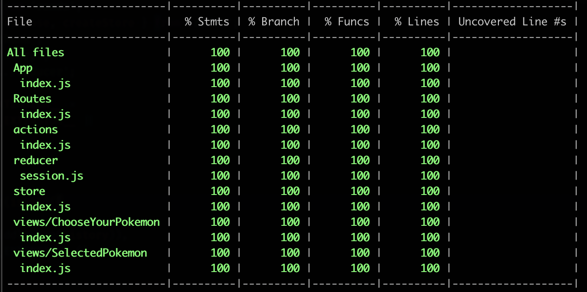

- My personal approach to testing (no one right way)
- React/Redux Demo App
- confidence that I didn't break any existing code
- confidence that my new code works as intended
Types of tests
- End to End: Testing full blown user flows
- Integration: Testing interactions between multiple services / components
- Unit: Testing single component / function in isolation (input/output)
Other types
- Snapshot: Testing that a component's rendered UI does not change
- Static: Testing pre compile-time (eslint, typescript)
- Cross Browser / Visual Regression Testing
Things to consider
unit -> integration -> E2E
- points of potential failure: minimum -> -> -> maximum
- engineering time: minimum -> -> -> maximum
- cost: minimum -> -> -> maximum
- speed: fast -> -> -> slow
More things to consider
unit -> integration -> E2E
- code tested: minimum -> -> -> maximum
- # of tests needed: maximum -> -> -> minimum
- confidence: minimum -> -> -> maximum
Integration Tests
- so there are trade-offs at every level
- key is to maximize confidence while minimizing all other downsides
- integration tests are a great compromise

- You should very rarely have to change tests when you refactor code. (Don't test implementation details!)
- The more your tests resemble the way your software is actually used, the more confidence they can give you.
- 3 tests
- 100% test coverage
- only 1 thing mocked 